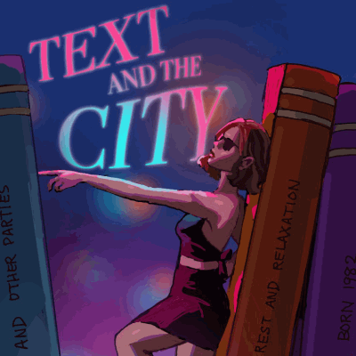
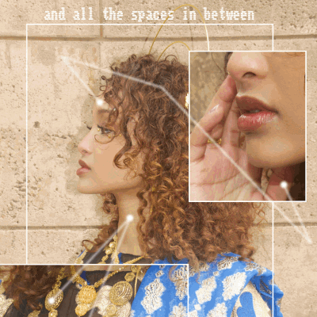
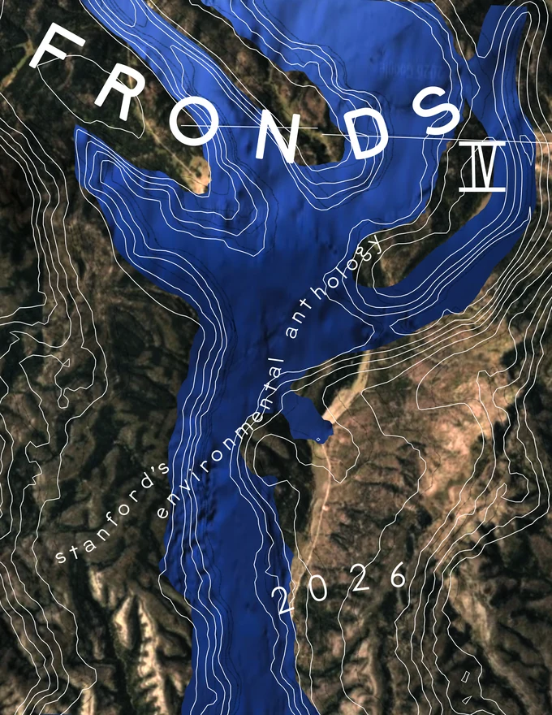
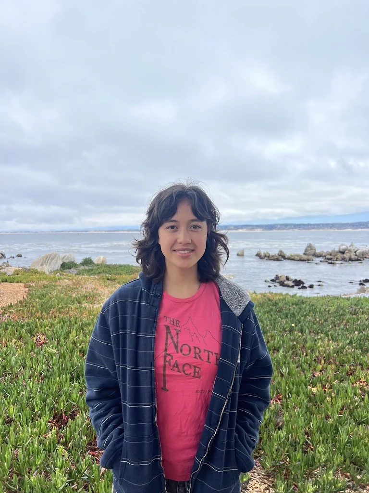

Sustainability


scientific illustration
(click for gallery)
invasive pieces
Physical design
skier automaton

Print design
the stanford daily
mint magazine


fronds litmag

About

sustainable designer/
design thinking ecologist
algae used in the design of this site: Plocamium pacificum, Ulva lactuca, Rhodymenia californica
“in order to make progress, there is only nature, and the eye is turned through contact with her”
-paul cézanne
